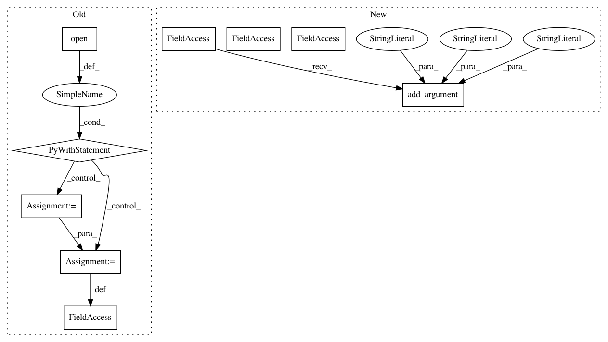

9a9778a6d9f4b2751a7ff5e0a2d4dcd7e6eee0a2,rnaseq/src/run_STAR.py,,,#,20
Before Change
args = parser.parse_args()
if args.fastq1.endswith(".gz"):
with gzip.open(args.fastq1) as f:
f.readline()
seq = f.readline().strip()
read_length = len(seq)
else:
with open(args.fastq1) as f:
f.readline()
seq = f.readline().strip()
read_length = len(seq)
overhang = read_length-1
if read_length<=201:
starcmd="STAR"
After Change
parser.add_argument("--outSAMattributes", default=["NH", "HI", "AS", "nM", "NM", "ch"], nargs="+")
parser.add_argument("--chimSegmentMin", default="15", help="Minimum chimeric segment length; switches on detection of chimeric (fusion) alignments")
parser.add_argument("--chimJunctionOverhangMin", default="15", help="Minimum overhang for a chimeric junction")
parser.add_argument("--chimOutType", default=["WithinBAM", "SoftClip"], nargs="+", help="")
parser.add_argument("--chimMainSegmentMultNmax", default="1", help="")
parser.add_argument("--genomeLoad", default="NoSharedMemory")
parser.add_argument("--STARlong", action="store_true", help="Use STARlong instead of STAR")
parser.add_argument("-t", "--threads", default="4", help="Number of threads")
args = parser.parse_args()
if args.STARlong:
In pattern: SUPERPATTERN
Frequency: 3
Non-data size: 9
Instances
Project Name: broadinstitute/gtex-pipeline
Commit Name: 9a9778a6d9f4b2751a7ff5e0a2d4dcd7e6eee0a2
Time: 2017-04-11
Author: francois@broadinstitute.org
File Name: rnaseq/src/run_STAR.py
Class Name:
Method Name:
Project Name: metalbubble/moments_models
Commit Name: 70e4855f5608c4481dfffd5f762e310d631d06c3
Time: 2020-10-09
Author: mmonfort@mit.edu
File Name: test_model_CAM.py
Class Name:
Method Name:
Project Name: GoogleCloudPlatform/ml-on-gcp
Commit Name: 8079adae33711e4886a625df3f0ae9860739f7b9
Time: 2019-09-03
Author: yuhanliu@google.com
File Name: example_zoo/tools/process.py
Class Name:
Method Name: